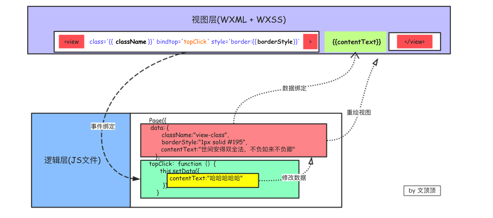
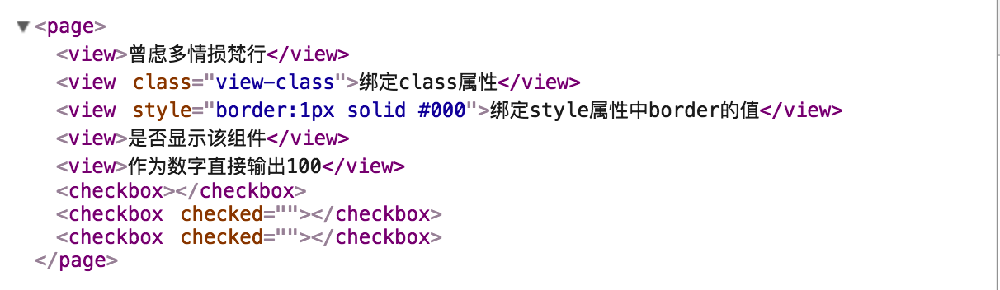
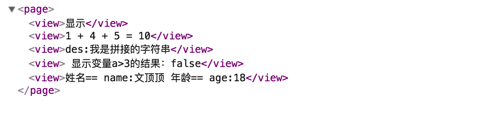
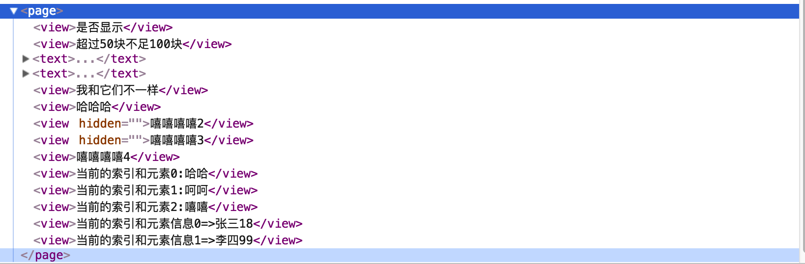

本文介绍小程序框架中的数据绑定以及基本指令相关知识点。
1.0 数据绑定 我们在进行小程序开发的时候应该深刻理解数据绑定和事件响应模型，这和前端开发中面向DOM操作的编程思想截然不同。
小程序中的页面在进行渲染的时候，框架本身会将WXML文件和对应js文件中Page函数里面的data进行绑定。在WXML页面中我们可以直接使用data中的属性。小程序中的数据绑定使用Mustache语法(双大括号插值)来讲变量或者是简单的运算规则包起来。

简单绑定
简单绑定指的是使用Mustache语法将变量包起来，在模板中直接作为字符串输出。
数据的简单绑定可作用于组件的内容 、组件的属性 、组件的控制属性 以及关键字 (按JavaScript中关键字其真值输出)等输出。
这里给出简单数据绑定的代码和运行结果示例：
1 2 3 4 5 6 7 8 9 10 11 12 13 14 15 16 17 18 19 20 21 22 23 24 25 26 //.wxml文件的内容 <view > {{contentText}}</view > <view class ='{{className}}' > 绑定class属性</view > <view style ='border:{{borderStyle}}' > 绑定style属性中border的值</view > <view wx:if ='{{isShow}}' > 是否显示该组件</view > <view > 作为数字直接输出{{100}}</view > <checkbox checked ='{{false}}' > </checkbox > <checkbox checked > </checkbox > <checkbox checked ='false' > </checkbox > //js文件的内容 Page({ data: { contentText:"曾虑多情损梵行", className:"view-class", borderStyle:"1px solid #000", isShow:true } })

运算支持
小程序在进行数据绑定的时候还支持进行简单的运算，这些运算包括三元运算 、算术运算 、逻辑判断 、字符串运算 和对象取值 等操作，这些运算在具体执行的时候遵从JavaScript语言的运算规则。
这里给出数据绑定运算支持的代码和运行结果示例：
1 2 3 4 5 6 7 8 9 10 11 12 13 14 15 16 17 18 19 20 21 22 23 24 25 26 27 28 29 30 31 //wxml文件内容 <view > {{isShowText ? '显示' : '不显示'}}</view > <view > {{ a }} + 4 + {{ b + c }} = {{a + b + c + 4}}</view > <view > 显示变量a>3的结果：{{a > 3}}</view > <view > {{ "des:" + strM}}</view > <view > 姓名== {{"name:" + objM.name}} 年龄== {{"age:" + objM.age}}</view > //js文件内容 Page({ data: { isShowText:true, a:1, b:2, c:3, strM:"我是拼接的字符串", objM:{ name:"文顶顶", age:18 } } })

2.0 基本指令 在小程序开发中还有一些指令可以用来辅助数据绑定的操作，它们分别是条件渲染 的指令和列表渲染 的指令，负责处理分支和循环两种结构。
条件渲染
条件渲染的指令主要有：wx:if、wx:elif和wx:else,它们其实相当于if、else if和else。
当绑定的数据结果为true的时候显示，为false的时候不显示。注意 wx:else指令只能和wx:if指令配合成对使用，无法独自使用。如果需要控制多个组件的显示和隐藏又不影响布局，那么可以使用block标签来进行包裹。
注意：block不是组件，仅仅是一个包裹元素，页面渲染的时候不做任何处理。
wx:if指令和hidden简单对比
❏ wx:if是惰性的，当条件为真时才第一次渲染组件，否则将忽略。设置hidden的组件始终会被渲染，仅通过样式控制显示或隐藏，本身不会触发销毁和重新渲染。
列表渲染
列表渲染的指令主要有：wx:for、wx:for-index和wx:for-item。
wx:for指令(控制属性)用于遍历数组根据数据的元素来重复渲染组件。默认情况下，渲染过程中数组当前渲染项的下标为index,当前项为item，它们可以通过wx:for-index和wx:for-item指令重命名。如果需要渲染的是多个组件的组合，那么可以使用block元素来进行包裹。
这里给出条件渲染和列表渲染的代码示例和运行结果：
1 2 3 4 5 6 7 8 9 10 11 12 13 14 15 16 17 18 19 20 21 22 23 24 25 26 27 28 29 30 31 32 33 34 35 36 37 38 39 40 41 42 43 44 45 46 47 48 49 //js文件内容 Page({ data: { isShow:true, count:80, arrM1:[ "哈哈", "呵呵", "嘻嘻" ], arrM2: [ {name:"张三",age:18}, {name:"李四",age:99} ], } }) //wxml文件内容 <view wx:if ="{{isShow}}" > 是否显示</view > <view wx:if ="{{count > 100}}" > 已经超过100块</view > <view wx:elif ="{{count > 50}}" > 超过50块不足100块</view > <view wx:else > 连50块都不给我</view > <block wx:if ='{{true}}' > <text > 我是文本\n</text > <text > 我还是文本\n</text > <view > 我和它们不一样</view > </block > <view wx:if ='{{isShow}}' > 哈哈哈</view > <view hidden > 嘻嘻嘻嘻2</view > <view hidden ='false' > 嘻嘻嘻嘻3</view > <view hidden ='{{false}}' > 嘻嘻嘻嘻4</view > <view wx:for ='{{arrM1}}' > 当前的索引和元素{{index + ":" + item}}</view > <view wx:for ='{{arrM2}}' wx:for-index ='i' wx:for-item ='ele' > 当前的索引和元素信息{{i + "=>" + ele.name + ele.age}}</view >

警告：Now you can provide attr "wx:key" for a "wx:for" to improve performance。官方解释：当数据改变触发渲染层重新渲染的时候，会校正带有 key 的组件，框架会确保他们被重新排序，而不是重新创建，以确保使组件保持自身的状态，并且提高列表渲染时的效率。